1부 · 사이트 안내 / 로그인과 메뉴
CS Class 강사님 안내서
학생은 스스로 진행하고, 강사님은 막힌 곳을 도와줍니다.
2학년 10반·11반 · 2026년 10월
https://cs-class-donghyunt.vercel.app
강사님은 비밀번호만 입력합니다
- 선생님으로 입장을 누릅니다.
- 교사 비밀번호 로그인을 고릅니다.
- 전달받은 비밀번호를 넣고 교실 입장을 누릅니다.
아이디는 입력하지 않습니다.
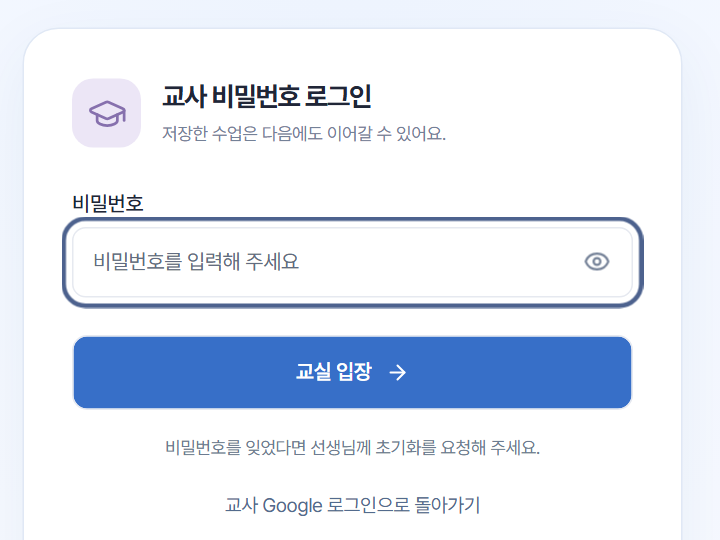
담당 반을 고른 뒤, 왼쪽 메뉴로 이동합니다
강사님은 10반·11반을 관리합니다. 화면은 가상 계정으로 촬영했습니다.
1부 · 사이트 안내 / 수업 준비
수업 전에, 반과 수업부터 확인합니다
학생에게 오늘 할 수업 제목과 필수 범위를 알려 주세요.
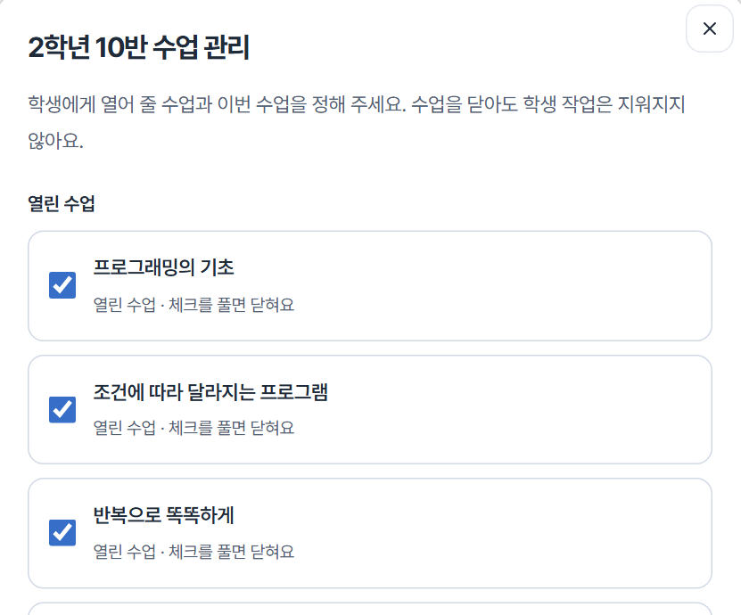
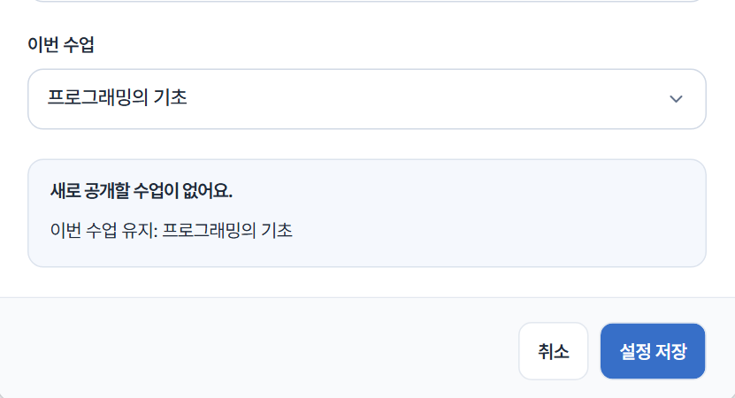
- 수업 관리에서 담당 반의 설정 열기를 누릅니다.
- 열린 수업에 체크합니다.
- 이번 수업을 하나 고릅니다. 학생 화면 맨 위에 보입니다.
- 설정 저장을 누릅니다.
체험 내용은 학생 기록에 반영되지 않습니다.
정규 수업은 세 단계로 이어집니다
확인 문제 풀기
틀린 문제 다시 풀기
검증 후 제출하기
학생은 열린 수업만 볼 수 있습니다. 수업을 닫아도 저장한 작업은 유지됩니다.
2부 · 실제 수업 운영 / 처음 입장하기
첫 시간에는 공통 코드로 입장합니다
이미 이용한 학생은 학번과 개인 비밀번호로 들어옵니다.
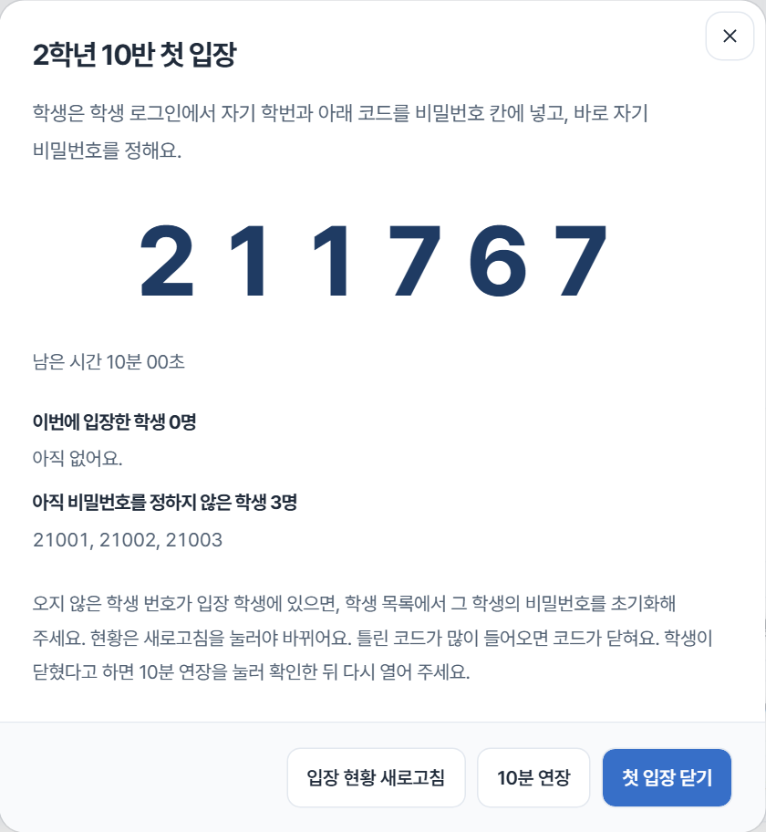
- 학생 현황·계정 → 첫 입장 열기에서 코드를 엽니다.
- 6자리 공통 코드는 10분 동안 쓸 수 있습니다.
닫거나 다른 화면으로 가면 코드도 닫힙니다. 부족하면 10분 연장, 만료되면 새 코드로 다시 엽니다.
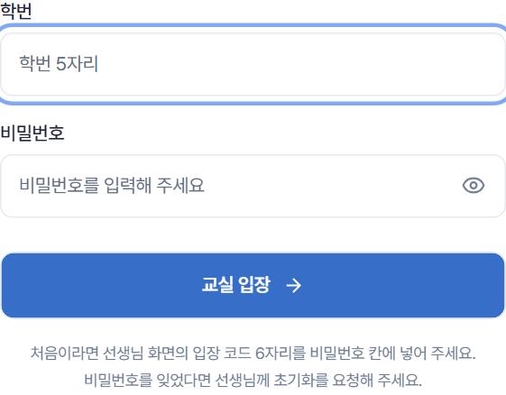
학번 칸: 본인 학번 5자리
비밀번호 칸: 공통 코드 6자리
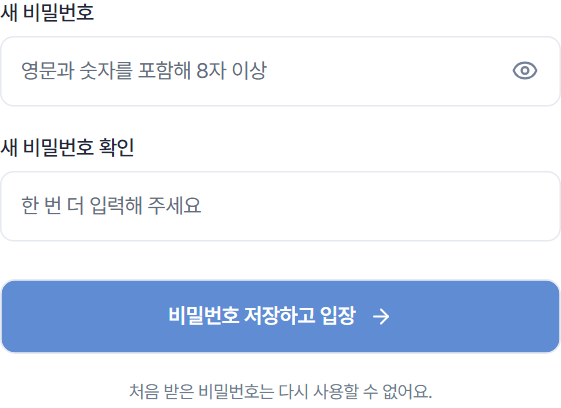
영문과 숫자를 포함해 8자 이상
다음 입장부터 이 비밀번호를 씁니다.
입장 현황 새로고침 후 입장한 학번을 출석과 대조합니다.
닉네임을 공식 명부로 보지 마세요. 결석한 학번이 들어왔으면 개별 초기화합니다.
2부 · 실제 수업 운영 / 학생 활동
학생은 이 순서로 진행합니다
본인 반과 이번 수업 제목을 확인한 뒤 시작합니다.
읽고, 확인하기
설명과 그림을 보고
확인 문제를 모두 맞힙니다.
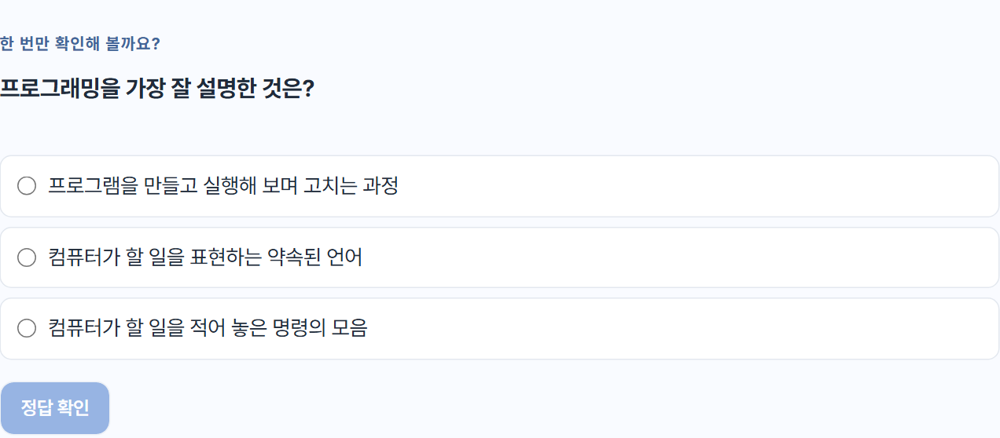
풀고, 다시 보기
채점 뒤 피드백을 읽고,
모두 맞힐 때까지 다시 풉니다.
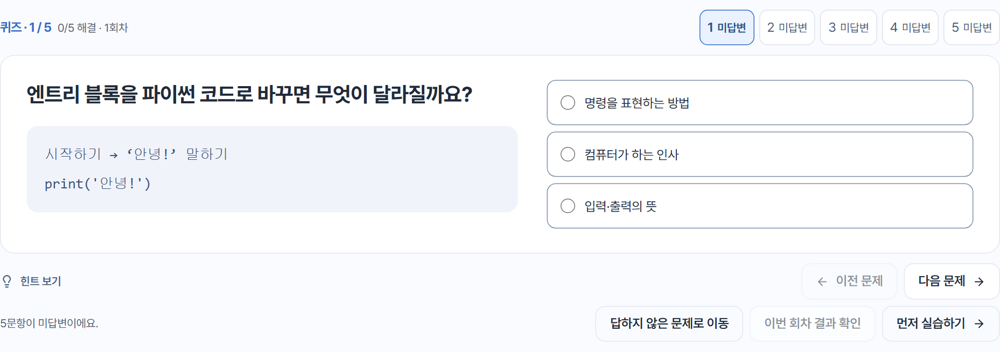
만들고, 제출하기
기본 미션마다
실행 → 검증 → 제출합니다.
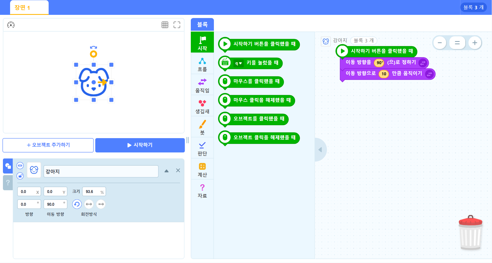
배지는 내 배지에서 봅니다. 도전과 배지는 만점의 필수 조건이 아닙니다.
2부 · 실제 수업 운영 / 순회 지도
현황을 확인하며 순회합니다
학생 현황·계정에서 담당 반 → 확인할 수업 → 새로고침
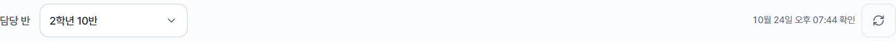
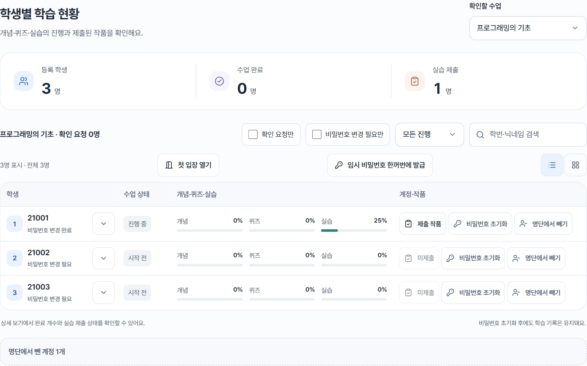
학번·반·코드 만료를 확인합니다.
이번 수업의 첫 개념으로 안내합니다.
피드백을 읽고 다시 풀게 합니다.
실행 결과·검증 안내·블록 힌트를 봅니다.
작품 제출까지 하게 합니다.
선택 도전이나 추가 복습을 권합니다.
그 학번의 비밀번호 초기화를 누릅니다. 한 번 보이는 30분짜리 임시 비밀번호는 그 학생에게만 전달합니다. 다시 개인 비밀번호를 정하며, 학습·제출 기록은 유지됩니다.
2부 · 실제 수업 운영 / 저장과 제출
저장은 보관, 제출은 완료입니다
하던 작업은 저장
미완성 답안·블록도 저장 또는 Ctrl+S
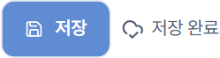
실습은 검증을 통과한 뒤, 제출까지
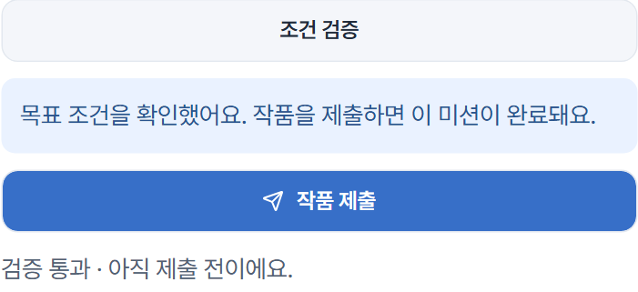
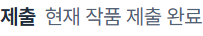
제출 후 고쳤다면 다시 검증 → 제출합니다. 이전 제출본은 유지됩니다.
편집 중에는 수동 저장합니다. 정답 확인·채점·검증·제출은 필요한 작업과 결과를 함께 저장합니다.
연결을 확인하고 저장 다시 확인 / 결과 다시 확인으로 재시도합니다. 해결 전에는 새로고침하거나 창을 닫지 않습니다.
2부 · 실제 수업 운영 / 종료 확인
마치기 3~5분 전, 함께 확인합니다
학생이 부족한 곳을 알고 다음 시간에 이어갈 수 있게 돕습니다.
- 필수 수업의 세 단계가 각각 100%
- 기본 미션 전부 제출 성공
- 마지막 편집 후 저장 완료
- 반·수업 선택 후 새로고침
- 미완료 학생의 부족한 단계 확인
- 필요하면 제출 작품 살펴보기
필수 수업이 여러 개면 수업마다 확인합니다. 덜 끝난 작업도 저장하고 마칩니다.
학생에게 이렇게 안내해 주세요
“지정한 정규 수업의 개념·퀴즈·모든 기본 실습을 100%로 마치면 수행평가 만점 기준을 채울 수 있어요. 틀려도 다시 풀고 고쳐 제출하면 됩니다. 끝까지 해낼 수 있도록 도와줄게요.”
선택 도전과 ‘선택 복습’은 만점에 필수가 아닙니다.
기초·조건·반복 정규 수업을 다시 하는 복습과, 별도 ‘선택 복습’(문제 추상화·알고리즘 설계·순서도 연구소)은 구분합니다. 선택 복습은 성적에 반영하지 않습니다.
사이트의 학습 기록과 제출물을 바탕으로 담당 선생님이 최종 점수를 확인합니다. 가능한 한 많은 학생이 만점에 도달하도록 돕는 것이 목적입니다.